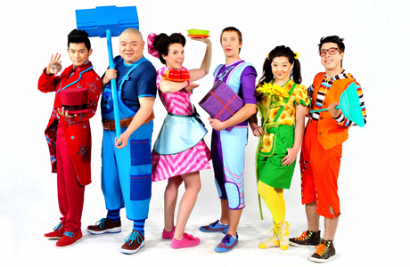

Patricia Edgar: What are Children's Television Programs and should we preserve them? Part 2
Posted on September 22, 2017 by Nicholas Gruen

The birth of a Children's Television industry
No Children's production industry in Australia can exist without a viable, film and television industry which must be sustained to tell Australian stories. That is a given. But what sits under that for children must be driven by children's needs.
When done well, film and television programs can stimulate a child's imagination and open up the infinite opportunities that life presents. Like good books, good television programs can extend children's understanding of their world. Stories are particularly effective in helping children develop emotionally. That is why Australian and local programming is important for children. In 1980 television was the medium best suited to delivering these experiences to children. The media most suited today are the new media.
Under the Children's Television Standards that have been in existence for more than 33 years a children's program is one which is made specifically for children or groups of children; is entertaining; is well produced using sufficient resources to ensure a high standard of the script, cast, direction, editing, shooting, sound and other production elements; enhances the child's understanding and experience; and is appropriate for Australian children.
A number of very ordinary programs and programmes of dubious value for children have slipped through this quota net because of globalization and financial pressure on networks and producers. Animations made for a global audience have dominated the drama quota and much live action has been reduced to soaps. The need to have an international investor on board has compromised cultural integrity in some cases and allowed interference in the process. Such programming has become bland and conservative, or controlled creatively outside Australia. It cannot be claimed the regulations are now providing the rich experience intended when the CTS were designed and implemented.
The networks initially insisted they could police themselves with self regulatory codes and they resisted all attempts to persuade them to confirm to guidelines, taking their objections as far as the High Court before legislation was passed that ensured stations could lose their licence if they did not meet regulated quotas. But the evidence has shown networks will not produce programs that meet the spirit of the standards and they insist existing quotas are one more reason they cannot compete in the global marketplace against players such as Google, Facebook, Amazon and Netflix.
So government is in the position where it must decide how best to intervene in the market place and for what purpose. Standards relevant to today's media environment must be based on principles that serve children's needs or it is a waste of effort and resources.
The fundamental question is what are children's programming needs today?
When I chaired the Advisory Committee on Program Standards for the Australian Broadcasting Control Board in 1975-6 we came up with an approach that we thought could work at that time. Programs were to be pre-classified by an expert committee before they went to air as suitable children's programs. They were to be shown at the same time across the networks to create an even playing field and broadcast at a time when children were available to be in the audience. The proposal was for one hour a week day 4.0 ' 5.0 pm with 30 minutes for preschoolers earlier in the day.
In 1979 I began my tenure as Chair of the Children's Program Committee (CPC) of the Australian Broadcasting Tribunal (ABT) and given the task of drawing up the guidelines to implement the C and P classification scheme, much as was described in the 1976 Report. At that time, I undertook a study of children's responses (8-15) to children's television programs from the UK, USA and Canada that had not been seen in Australia before. The study, called The Unknown Audience, documented the fact that drama programs were more popular with this age group than any other form of program. Comedies were also popular, and the least favoured programs were magazine formats. 1
The guidelines the committee drew up, defined the types of programs the CPC were calling for and emphasized the need for drama programs in the broad quota mix. But the programs the networks submitted for C classification were low cost studio-based game shows and magazine programs along with repeats of programs more than a decade old. (591 episodes of Lassie was one example) No original Australian drama was forthcoming until the CTS were implemented under new legislation, calling for a drama quota in 1984.
Many advocates who supported the concept of children's programs were clearer about what they did not want than what they wanted. In the 70's and 80's Australian parents were still caught up in the fear that television's power to influence children adversely was such that, like the romantics of old, we should be protecting children from real life including, violence, sex and stereotypes. Such advocates wanted pro-social programs with characters who were positive role models.
The Senate Standing Committee on Children and Television (1978) listened to submissions from advocacy groups and endorsed their concerns. During this decade, when calls for children's programming were at their peak, Australia's censorship rules were stringent and indeed galling to filmmakers working in our emerging industry. Australia was a very conservative country in the 60's and early 70's and books such as Norman Mailer's Why are we in Vietnam?, James Baldwin's Another Country, Barry Humphries' Barry McKenzie, Ian Fleming's The Spy who Loved Me, Phillip Roth's Portnoy's Complaint, as well as Mickey Spillane, Lolita and Lady Chatterly's Lover were banned. The Hollywood Motion Picture Production Code with its moral guidelines prevailed from 1930-68. The Code was wide-ranging resolving 'that special care be exercised in the manner in which subjects are treated, to the end that vulgarity and suggestiveness may be eliminated and that good taste may be emphasized': Concerns ranged from the use of the flag; attitudes toward public characters and institutions; men and women in bed together; the institution of marriage; sympathy for criminals; excessive or lustful kissing'. They are issues that would raise few if any concerns in 2017.
There were few models of children's television programs to go by in 1970-80. In the post World War Two years, simple adventure stories became popular and censorship boards accepted such fare. Lassie Come Home was one example that spun off 7 feature films and 591 episodes of a series called Lassie made from 1954-73. It seemed you couldn't go wrong with animals so eighty-eight episodes of Flipper were produced from 1964-67 and ninety one episodes of Skippy from 1966-77. Adventure was a genre believed to be popular with children and Roger Mirams, a pioneering New Zealand film-maker produced a series of children's adventure series including, The Terrific Adventures of the Terrible Ten (1959), The Magic Boomerang (1965) and Funny Things Happen Down Under (1965). But after this burst of activity live action local drama gave way to re-runs of American sit-coms which took over the schedules. Because television sets had penetrated the Australian market, there was no need for the networks to bait parents to buy with promises of entertainment for children; the imported shows were very much cheaper.
I was appointed to run the Australian Children's Television Foundation (ACTF) in 1982, to develop exemplary programs for children in order to demonstrate Australians could produce to a standard equal to any producer in the world, prove our children could act and would view programs made for them.
As a teacher I had experience teaching 11-17 year olds. As a mother I watched my children grow and observed their tastes and interests. As a researcher I studied children and read academic works about them, questioned them, surveyed them, talked to them and played with them. Communication research was a developing field and several research studies, were emerging from around the world that helped clarify the fact that children are not so easily influenced and parental, school and peer influences are more potent than entertainment programs. 2 I was teaching and researching mass media research and was convinced misinformation was holding back innovation in children's programming.
I read the scientific journals and listened to people speaking about and on behalf of children and I was often in fierce disagreement with what I read and heard so I had to think carefully about what I was doing and on what basis I was doing it. I found I kept going back to the best source of knowledge I had ' my own childhood and what I had felt, thought and experienced as a child.
I was a popular culture enthusiast. I collected comics, I listened to the top ten, I loved going to the pictures and would watch any film showing. I was an avid reader and my favourite time of day was when the lights went out at night and I was left to indulge my own imaginings without interruption. I remembered what it was like to be a child.
I believed we needed to accomplish two main goals at the ACTF, one was to extend the notions of genre typically associated with children's programs and the second was to delve more deeply into the child's secret world. I wanted to go beyond simple family and animal adventures, to tell Australian stories to children about their lives that reflected their social, cultural and emotional reality. Five years chairing the CPC convinced me the commercial networks would not make such stories and I believed briefing writers, to emphasize pro-social lessons, was not going to lead to programs of interest to children.
My first task as Director of the ACTF was an experiment in developing an anthology series, Winners, which would showcase diversity in children's drama and address contemporary issues children were experiencing growing up in the 80's. The series included contemporary, historical, fantasy, comedy, science-fiction and social-realism genres. They had male and female protagonists and children of different ages as actors, and I wanted to encourage reading and their use by teachers so all ACTF programs were accompanied by books and learning materials. Programs were designed to entertain but with an educational purpose at their core.
Winners had to succeed; credibility for the ACTF was at stake. I called on the top creative people in the Australian film industry; the writers, directors, producers with a track record to work on this series. When the scripts were submitted to the CPC for approval, the committee did not want to approve them. I had spent five years chairing the ABT's Children's Program Committee, I was the major architect of both the C classification and had written the guidelines for the standards, so I could be forgiven for thinking that I understood their meaning and intention. But some Committee members thought the series did not conform to the CT Standards. Their feedback included: adult characters were 'put down', a character in a story cheated, the stories were not relevant to the age group (they were too old for them), kids wouldn't comprehend the issues raised, the stories were considered too emotionally dramatic. Most members came around to accepting the scripts in the end but one child advocate dissented, arguing Winners were not suitable programs for children. The Australian Film Commission and Film Victoria, from whom we were seeking funding, said the scripts weren't good enough. New South Wales invested and Winners did get made and the series proved to be a success. It won multiple national and international awards, sold into 75 countries and established a reputation for the Australian children's production industry.
But as a symptom of the way adults can get in the way of telling stories relevant to kids, the Director General of Education in Victoria read one of the books based on the script Just Friends, set in the western suburbs of Melbourne which dealt with low self esteem, teenage drinking and pregnancy. He sent a memo to all Victorian schools saying the book was not suitable for young readers because it used, 'the worst form of gutter language'. This amounted to 'pissed off', 'bitch' and 'shut up', rather typical teenage expressions at the time. The Winners books remained in print for more than 10 years and sold 170,000 copies. The feedback from teachers using the series as a resource was overwhelmingly positive.
Winners was a huge step forward for the children's production industry because, along with other quota programs produced, it raised the status of programming for children ' it was shown in prime time on the Ten Network ' it proved children would watch programs made for them, proved Australian children could act and that there was an international market as well as a domestic market for Australian children's programs. Unexpectedly, ACTF programs won a raft of awards overseas and international broadcasters began to look at Australia with new interest. Captain Johnno, a program in the second ACTF anthology series Touch the Sun (1988), made for the bicentennial year, won an International Emmy, only the second Emmy ever to be won by an Australian production.
The success of Winners and Touch the Sun gave me confidence to try the next radical experiment. The second major shift I wanted to make was in exposing the world children really revelled in rather than the politically correct world the do-gooders wanted them to inhabit. This was an even tougher project. I searched for an idea that explored the underground culture of childhood. I aimed to produce a program that spoke to the unique larrikin Australian spirit, in our vernacular, with our sense of fun; the culture our children were growing up in. It took some months to identify what I thought might work.
When I read Paul Jenning's short stories I knew he understood children. He had written a number of short, plot-driven tales that had a funny twist. There were no consistent characters or context but they made me laugh out loud and I thought here was something to work with. Paul Jennings had never written a script and knew nothing of the film industry, but I knew just the person to put him together with to design the series I was after. Esben Storm, a talented writer, director, actor and funny man, had worked on Winners and Touch the Sun and I knew he could work with Jennings and create on screen what I was after.
Together they came up with Round the Twist. We took a year to develop the scripts, writing draft after draft as I searched for funding. I was told repeatedly this idea could not translate to the screen; the stories may be funny on the page but they would be visually disgusting. Eventually I persuaded Anna Home the Head of BBC Children's to acquire the series. That was the break that led to financing. 3
The series, although idiosyncratically Australian, became, and remains, a hit with children from all over the world ' from Zimbabwe to Brazil, Japan to France. Round the Twist was made for Australian children but was the most commercially successful children's international program the Australian Film Finance Corporation funded in the decade; it was popular and acclaimed, and is still cited as a seminal program favored by almost all young Aussies. I rarely meet a young adult today who did not grow up with Round the Twist and regard it as a special program in their childhood. When it went to air in the UK it was a massive hit with the kids, but there were numerous adult complaints and The British Broadcasting Council sent a please explain letter to the BBC.
The path to the child audience was one of obstacles. What I was endeavoring to do through ACTF programs was both to preserve the experience of childhood and its associated values of spontaneity, enthusiasm, humour, idealism, humanism , curiosity, imagination and adventure; to show the struggle involved in growing up and learning to make decisions; to show how to be resilient and resourceful. To delight but also document the environment and social situations in which children live today. And to show parents the pressures children face as well as those on themselves. Round the Twist proved it could be done. The debate about children's television has too often been dominated and misinformed by imagined concerns about negative effects and political correctness. The result leads to conformity rather than experimentation and programming that contributes little to children's needs.
The debate has now been overtaken by changes in technology that raise a myriad of quite different issues and have reshaped the needs debate. Part 3 describes a new programming approach for children today.
1. Patricia Edgar & Ursulla Callus, The Unknown Audience, Centre for the Study of Educational Communication and Media, La Trobe University, 1979.
2. Patricia Edgar, PhD Thesis, Self esteem and attitudes to film and television programmes in a sample of junior high school students , La Trobe University, 1974; Patricia Edgar, Children and Screen Violence, University of Queensland Press, 1977.
3. Patricia Edgar, Bloodbath: A Memoir of Australian Television, Melbourne University Press, 2006, Ch. 11.